じめじめ梅雨カエルケーキで乗り切る！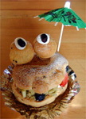 【富山発杉原秀圭延喜式内杉原神社禰宜同志記者】大王７世殿ご無沙汰いたしております。杉原秀圭延喜式内杉原神社禰宜でございます。実は近所に評判のランチカフェがあるのですが、こちらでは２年前から梅雨が近くなってくるとオリジナルのカエルケーキを販売しています。２年前にも「ぴょん吉」という名のカエルケーキを発売していたのですが、どうも見た目がイマイチ（写真１参照）だったため大王様にご報告いたしませんでした。
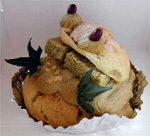 ところが今年はいきなりグレードアップ！(写真２参照)結構さまになっているのでご報告いたします。このケーキ、名前は「たべてケロ！」。価格は４８０円と高めですが、中身は豪華です。マジでこだわっているマスターは、国産有機栽培原料のみを使用し、人口的な添加物を一切使用しません。砂糖すら使わないのは驚きです。もちろん味も文句なしです。やはり「カエルケーキ」である以上はこうあってほしいものです。
【全国かえる奉賛会】おおおーすごいぞおおお。右側の初期型はシュールな感じだが、改良した二型は、さすがにカエル度を増しているのである。素晴らしいいいい。
カエルなクリニックで心は健康！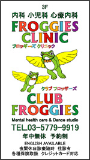 【江戸発医学博士池上カエルぴょん同志記者】大王様はじめまして。がま聖地つくばからお江戸に引っ越してきた緑色の者でございます。東京世田谷区の三軒茶屋にカエルだらけのクリニックが開業しました。！と言うかウチのカエル置き場がたりなくなって、開業のついでにカエルコレクションのショールーム兼ねてしまったの。 内科、小児科、心療内科で年中無休。早朝から深夜まで開いてまーす。名前はフロッギーズクリニック。 ほんとはケロケロクリニックとかカエルの王子様クリニックにしたかったんですが保健所通らないらしいとかいわれまして。まだちびにしかウケてないのでさびしいです。 クリニックのホームページです カエルになる注射、カエルになる点滴、カエルになるお薬の処方箋、カエルになってきたか確かめるレントゲン、カエル度の検査、カエルになるためのカウンセリング（カエルになった後のカウンセリングもあります）等々が必要な方は是非どうぞ、というクリニックです。 すでにカエルになっている方も人用の保険証で診察できます。 【全国かえる奉賛会】ぐおおお。大王が受診したいぞお。最近、カエルになって、頭の上に好物のコオロギが止っている夢を何度も見るのですが、これは何かの信号なのでしょうかああ。江戸にいったときに、診察をうけようっと。ほかのカエラーも、カエル専門クリニックの診察を受けよう！
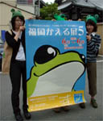 福岡カエル展５の開幕迫る！【福岡かえる展５実行委員会】六月三日の開幕を前に、福岡在住のカエラーは、広報活動やカエル大明神のお迎えなど、連日の準備に追われている。なにしろ、今年で５年目なのであるうううう。
《その１》：如意輪寺のカエル大明神をお迎えに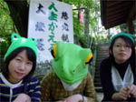 カエル寺こと如意輪寺にカエル大明神をお迎えに行ってまいりました。雨が降りそうだったので危険かと思いました（紙ですから）が強行いたしました。これで今年も会場で皆さんに拝んでいただけます。今回は、お寺から石のカエルちゃんも２体お借りできました。ご住職に書いて頂いた「かえるてん」という札つきです。こちらも要チェック！！
《その２》：いよいよ大詰め！会場設営の日程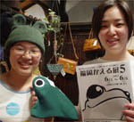 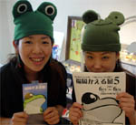 前回お知らせした通り、５／３１(土)に会場設営を行います。時間は午前１０：００に会場前に集合です。福岡かえる展スタッフ、また共に設営をして頂ける方は会場（エンジョイスペース大名）までお越し下さい！えーっと。なるべく動きやすい服装で（笑）！
《その３》：持ち込みは直接会場へ！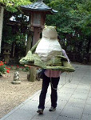 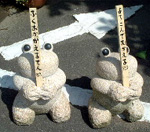 また、グッズ展示をご希望の方はこの日に直接持ち込んでもらうことになります。夕方くらいまではスタッフもおりますので、そのまま会場までお願いいたします。自分で持ち込み、展示して、最終日にはお持ちかえり！というのがカエル展出展の習慣です。
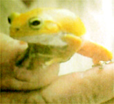 福岡に黄金カエル出現！【福岡発げこげこ大王七世直筆】九州の非カエル系新聞の西日本新聞に、『黄金カエル出現』という、ニュースが掲載されたぞおおお。大王は談話を求められたので、「黄金のカエルは、不況に苦しむ世の中が、変わる吉兆である」と話したら、そのまま掲載されたあああ。５月２４日の西日本新聞を読んでくれえ。なんでも、希望者にこのカエルを譲るらしいぞおお。
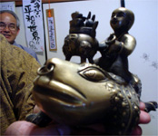 子供を乗せてるインドのカエル！【福岡発かえる寺の如意輪寺】カエル寺として知られる福岡県小郡市の寺には、かえる数千体が集まっていますが、まだまだどんどん増えています。増えるに連れて珍しい国のカエルたちもきています。この強そうなカエルの背中には、ごつい子供が乗っています。しかも背中には、香炉みたいな鼎が据え付けてあります。
【全国かえる奉賛会】すげええ。カエルをあやつる謎の子供もすごいが、金属製でめっちゃ強いカエルであるうう。大王もこのかえるにまたがって会社にいってみたいぞ。
伝説の大浦お慶カエル銀細工が福岡かえる展５に出展！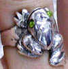 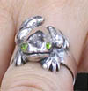 【長崎発大浦お慶同志記者】うちのプリティケロたちです。見てみてやって下さい。 実はかなり本気で、社運をかけて銀カエルを育ててます。「長崎銀細工」として、復興第一弾かえるにかえってもらわんとでしたい！ 長崎からカエル展に参加します。銀カエルの新作を連れてゆきますからねえええ。【全国かえる奉賛会】ついに待望の、お慶さんの新作が出ましたか！しかもカエル展に出展とはあああ。まっていますからねえええ。
|
メールマガジン登録
メールマガジン解除
Powered by


かえる古新聞過去に取り上げた記事を見出し付きで一覧したい人は、ここをクリック◆創刊号を見る◆先週号を見る◆話題の号を見る◆かえる新聞の昔を読む
|
私も入っています。。全国かえる奉賛会
大王様に会うには、このバナーをクリック。ずっと奥に写真館があるぞ。全国かえる奉賛会に入会するには、自分のホームページのどこかに、下の部分を追加するとバナーがリンク付きで表示されるぞ。どんどん入会しましょー |


|